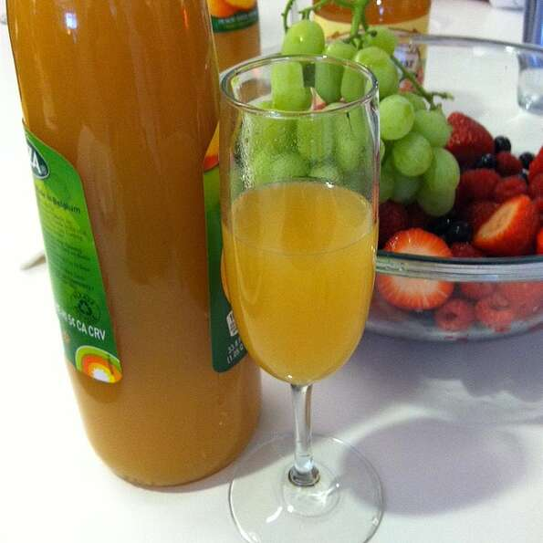

Classic Bellini Cocktail

Ingredients
- 2 fluid ounces peach juice
- 4 fluid ounces chilled sparkling wine
- 1 tablespoon raspberry juice (Optional)
Prepration
- Pour peach juice into a champagne flute. Slowly pour sparkling wine over peach juice; let sit until liquids have blended, about 1 minute. Pour raspberry juice over champagne mixture.
- Serve it.
Cook's Note:
Purists do not use Champagne to make this cocktail; it can be too flavorful and hide the subtle peach flavor.
If a non-alcoholic cocktail is desired, use sparkling water in place of the sparkling wine.